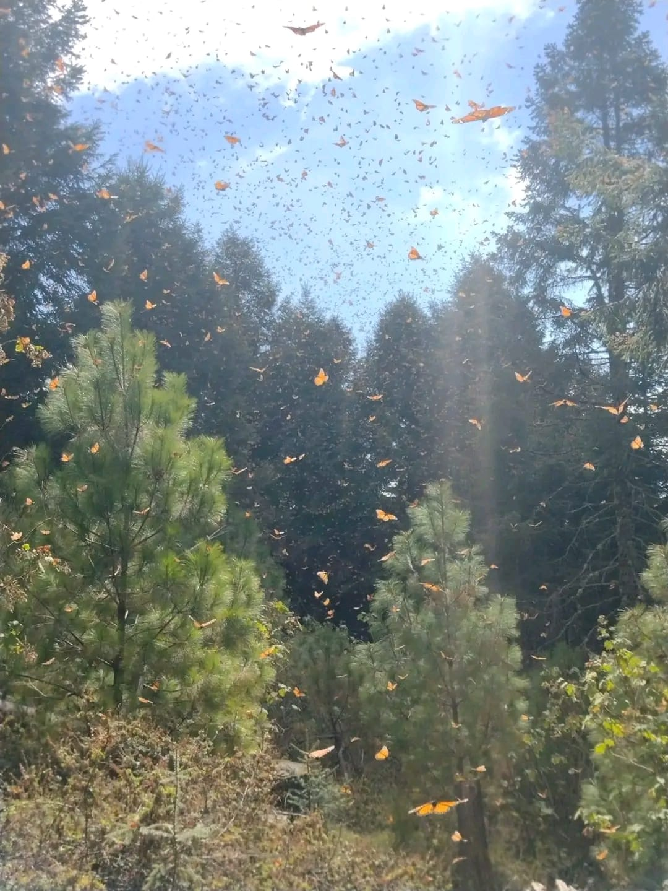
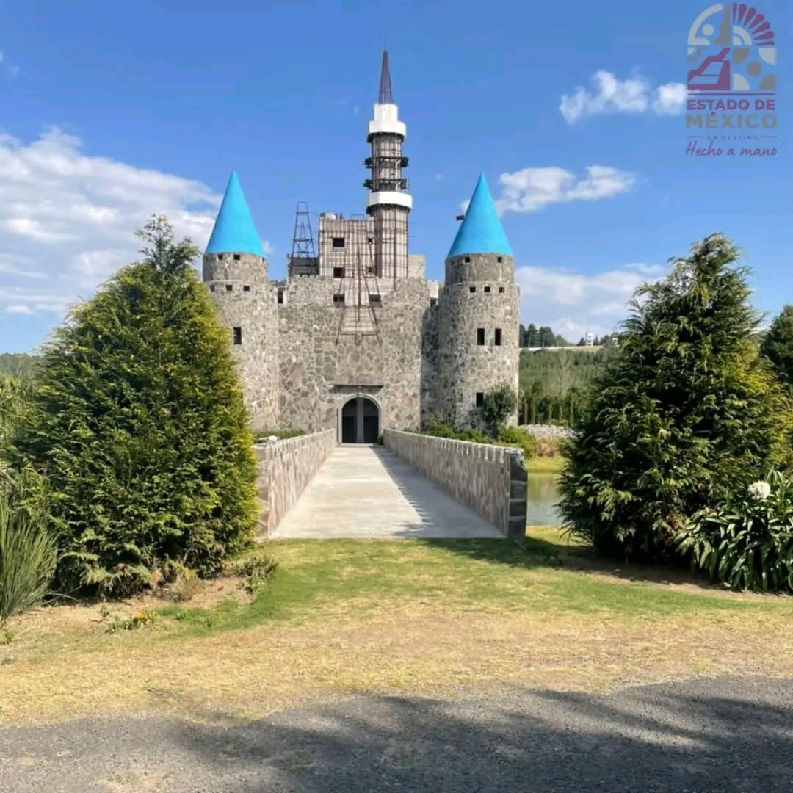
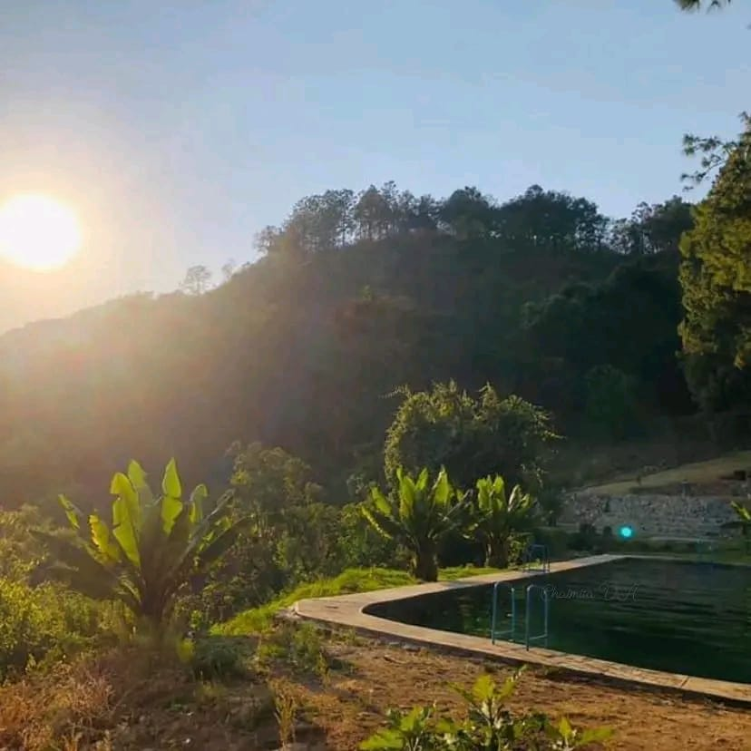

Principales atractivos del municipio
| Sitio | Descripción breve | |
|---|---|---|
| Mariposa Monarca | Ubicada en la comunidad de Santa Teresa, es el lugar donde cada invierno llegan para hibernar en sus bosques. |  |
| Valle Escondido | Ubicado en la comunidad de San Isidro, es una reserva ecoturística con un castillo medieval. |  |
| Chalmita | Ubicado en la comunidad de San Ildefonso Chalmita, es un área natural protegida con actividades ecoturísticas y observación de fauna local. |  |
Enlaces de interés
Para planear una visita o conocer más sobre la región, puedes consultar: